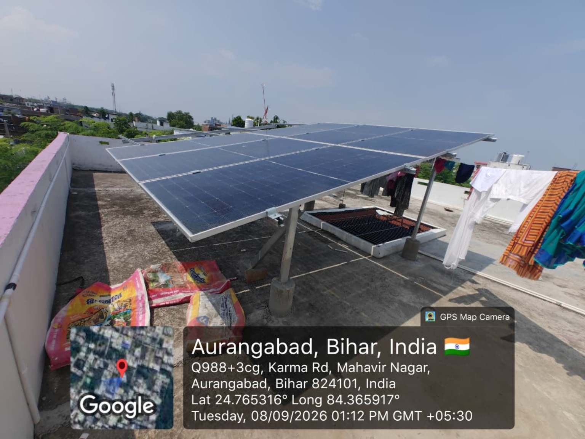

ABOUT US
SURYONIC ENERGY
Your solar energy partner for residential and commercial installations.

Who We Are
SURYONIC ENERGY focuses on practical solar solutions—from understanding electricity needs to system selection, installation and support.
✓ 5+ years of solar experience
✓ 68+ completed solar projects
✓ Residential & commercial solutions
✓ Documentation and net-metering guidance
✓ After-sales support
FOUNDERAuthorized by SBPDCL
Ajit Kumar Singh
Founder – SURYONIC ENERGY
5+ Years Experience in Solar Energy
Focused on making solar adoption simple, transparent and dependable for homes and businesses.
Talk to Us →Our Mission
Make solar adoption simple, transparent and accessible for homes and businesses.
Our Vision
Build a trusted regional solar brand known for quality installation and customer support.
Our Values
Integrity, quality, clear communication and long-term customer relationships.